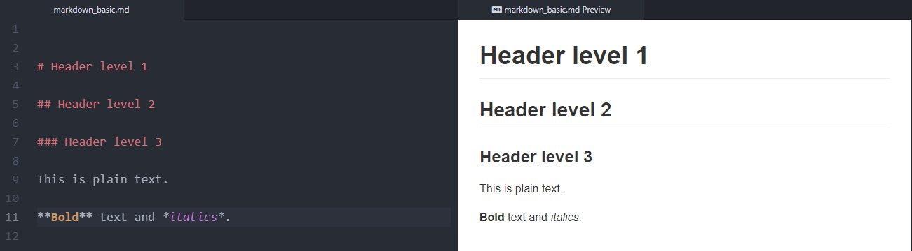
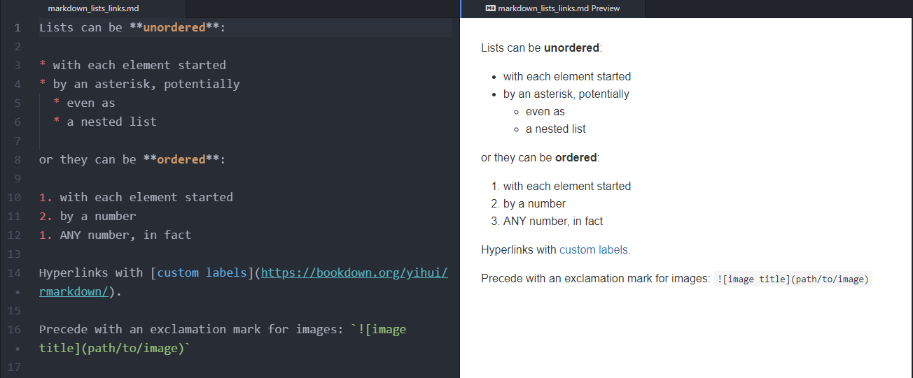
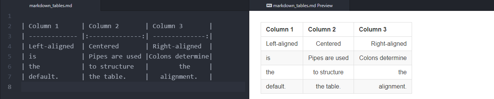
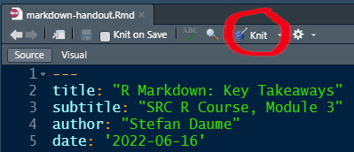
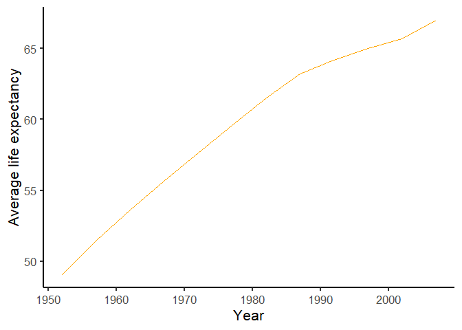

RMarkdown, Github & Co
Stefan Daume
16. June 2022
SRC PhD R course Module 3
RMarkdown, Github & Co
Avoid repetitive and error-prone tasks.
Markdown allows us to concentrate on document structure and content. We can then worry about styling and presentation later.
Markdown is a type of markup language (like HTML), but it is lightweight and more readable.
This is a list:
And a hyperlink for good measure.
HTML
<p>This is a list:</p>
<ul>
<li>with some <strong>bold</strong> and</li>
<li>some <em>italic</em> text.</li>
</ul>
<p>And a <a href="https://bookdown.org/yihui/rmarkdown/">hyperlink</a>
for good measure.</p>LaTeX
This is a list:
\begin{itemize}
\tightlist
\item
with some \textbf{bold} and
\item
some \emph{italic} text.
\end{itemize}
And a \href{https://bookdown.org/yihui/rmarkdown/}{hyperlink} for good
measure.Basic Markdown
This is a list:
* with some **bold** and
* some *italic* text.
And a [hyperlink](https://bookdown.org/yihui/rmarkdown/) for good measure.Typical workflow with markdown:



An overview of core markdown syntax can be found in this RMarkdown book chapter and even more options in a condensed form as an RMarkdown cheat sheet.
knitr package, an R package conveniently integrated into the R Studio UI..Rmd instead of .md.The YAML header must be placed at the beginning of a document and is enclosed by three dashes ---.
---
title: "Untitled"
output: html_document
date: '2022-06-14'
---Above is the default YAML header when generating an RMarkdown file in R Studio.
The YAML header contains meta-data (e.g. title, date, author(s) etc) as well as information about the output format and style.
A YAML header with more options might look like this:
---
title: "R Course SRC"
subtitle: "Module 3"
date: "`r Sys.Date()`"
author: 'Stefan Daume'
output:
html_document:
toc: yes
bibliography: references.bib
link-citations: yes
---
knit the document.```{r some-explanatory-label, echo=FALSE}
# here goes your R code
``````{r life-expectancy, echo=FALSE}
library(gapminder)
gapminder %>%
group_by(year) %>%
summarise(ale = mean(lifeExp)) %>%
ggplot(aes(x = year, y = ale)) +
geom_line(color = "orange") +
labs(x = "Year",
y = "Average life expectancy") +
theme_classic(base_size = 16)
``````{r life-expectancy, echo=FALSE}
library(gapminder)
gapminder %>%
group_by(year) %>%
summarise(ale = mean(lifeExp)) %>%
ggplot(aes(x = year, y = ale)) +
geom_line(color = "orange") +
labs(x = "Year",
y = "Average life expectancy") +
theme_classic(base_size = 16)
```
This code …
```{r}
# summarize gapminder data by continent
gapminder_latest <- gapminder %>%
filter(year == year_of_interest) %>%
group_by(continent) %>%
summarise(avrg_le = mean(lifeExp),
avrg_gdp = mean(gdpPercap))
# print the results as a table
gapminder_latest %>%
knitr::kable()
```… creates this table:
| continent | avrg_le | avrg_gdp |
|---|---|---|
| Africa | 54.80604 | 3089.033 |
| Americas | 73.60812 | 11003.032 |
| Asia | 70.72848 | 12473.027 |
| Europe | 77.64860 | 25054.482 |
| Oceania | 80.71950 | 29810.188 |
kable tablesThis code …
```{r}
# summarize gapminder data by continent
gapminder_latest <- gapminder %>%
filter(year == year_of_interest) %>%
group_by(continent) %>%
summarise(avrg_le = mean(lifeExp),
avrg_gdp = mean(gdpPercap))
# print the results as a table
gapminder_latest %>%
knitr::kable(digits = c(0,1,2))
```… creates this table:
| continent | avrg_le | avrg_gdp |
|---|---|---|
| Africa | 54.8 | 3089.03 |
| Americas | 73.6 | 11003.03 |
| Asia | 70.7 | 12473.03 |
| Europe | 77.6 | 25054.48 |
| Oceania | 80.7 | 29810.19 |
kableExtraThe kableExtra package offers even more options:
data-driven colouring
interactive tables
grouped headers
tables with (interactive) sparklines
and more …
|
Continent |
Mean life expectancy |
Mean GDP |
|---|---|---|
|
Africa |
54.8 |
3089.03 |
|
Americas |
73.6 |
11003.03 |
|
Asia |
70.7 |
12473.03 |
|
Europe |
77.6 |
25054.48 |
|
Oceania |
80.7 |
29810.19 |
```{r setup, include=FALSE}
knitr::opts_chunk$set(echo = FALSE)
library(readr)
library(dplyr)
library(ggplot2)
library(gapminder)
year_of_interest <- 2007
```Simplify library import and prepare datasets for reference in the whole document.
One of the most useful and powerful features for researchers using R Markdown.
A BibTeX database is simply a text file with the extension .bib and entries such as:
@misc{XieAllaire_et_2022,
author = {Xie, Yihui and Allaire, J. J. and Grolemund, Garrett},
title = {{R Markdown: The Definitive Guide}},
url = {https://bookdown.org/yihui/rmarkdown/},
urldate = {2022-06-07},
year = {2022}
}No need to write those. Export from your reference manager or journal pages.
Point to the .bib file in the YAML header.
---
title: "R Course SRC"
subtitle: "Module 3"
date: "2022-06-15"
author: 'Stefan Daume'
output:
html_document:
toc: yes
bibliography: references.bib
link-citations: yes
---And then include citations in the text with the format [@CitationKey], which in the previously shown example was [@XieAllaire_et_2022], which is a reference to (Xie, Allaire, and Grolemund 2022).
After presenting all results we have now reached the end of the document. Here should follow the bibliograpy.
# ReferencesAdd the header # References at the end of your document, knit and the complete bibliography is added to the output document.
After presenting all results we have now reached the end of the manuscript. As a final section should follow the bibliography.
# ReferencesAdd the header # References at the end of your document, knit and the complete bibliography is added to the output document.
Specify citation style in the YAML header.
---
title: "R Course SRC"
subtitle: "Module 3"
date: "2022-06-15"
author: 'Stefan Daume'
output:
html_document:
toc: yes
bibliography: references.bib
link-citations: yes
csl: ecology-and-society.csl
---The Citation Style Database database contains thousands of journal citation styles. Download the relevant one, reference in the YAML header and the output document will have the required citation style.
knit your R Mardown document to HTMLThis is how this presentation works (and the others before).
SRC PhD R course Module 3 — RMarkdown, Github & Co" by Stefan Daume
Presented on 16. June 2022.
This presentation can be cited using: doi:…
PRESENTATION DETAILS
Author/Affiliation: Stefan Daume, Stockholm Resilience Centre, Stockholm University
Presentation URL: https://sdaume.github.io/r-course-module-3/slides
Presentation Source: [TBD]
Presentation PDF: [TBD]
CREDITS & LICENSES
This presentation is delivered with the help of several free and open source tools and libraries. It utilises the reveal.js presentation framework and has been created using RMarkdown, knitr, RStudio and Pandoc. highlight.js provides syntax highlighting for code sections. MathJax supports the rendering of mathematical notations. PDF and JPG copies of this presentation were generated with DeckTape. Please note the respective licenses of these tools and libraries.
If not noted and attributed otherwise, the contents (text, charts, images) of this presentation are Copyright © 2022 of the Author and provided under a CC BY 4.0 public domain license.
Bryan, Jennifer. 2017. “Excuse me, do you have a moment to talk about version control?” PeerJ Preprints 5:e3159v2 (August). https://doi.org/10.7287/PEERJ.PREPRINTS.3159V2.
———. 2021. “Happy Git and GitHub for the useR.” https://happygitwithr.com/.
Chacon, Scott, and Ben Straub. 2014. Pro Git. Apress. https://doi.org/10.1007/978-1-4842-0076-6.
Xie, Yihui, J. J. Allaire, and Garrett Grolemund. 2022. “R Markdown: The Definitive Guide.” https://bookdown.org/yihui/rmarkdown/.
Most important:
Document consistently:
usethis::create_github_token()gitcreds::gitcreds_set()README.md (a useful project description)commit the changes of the README filepush to the remote Github repo